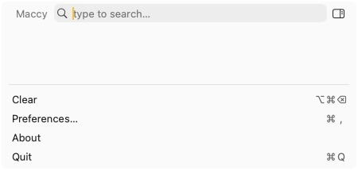
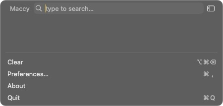
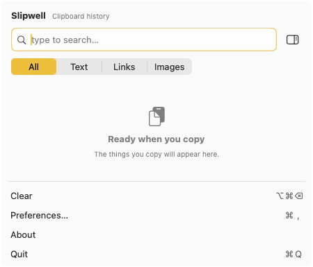
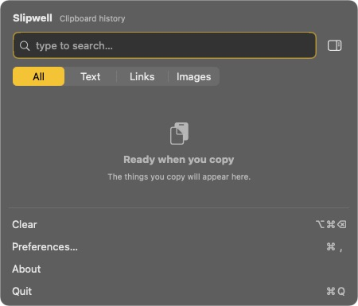
The same clipboard utility, with a clearer home for search, pins and the things you copy. These are real native-window captures using disposable fixtures. The underlying clipboard and storage models remain Maccy's.




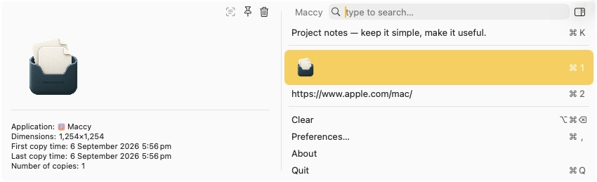
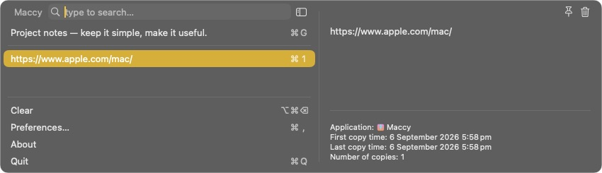
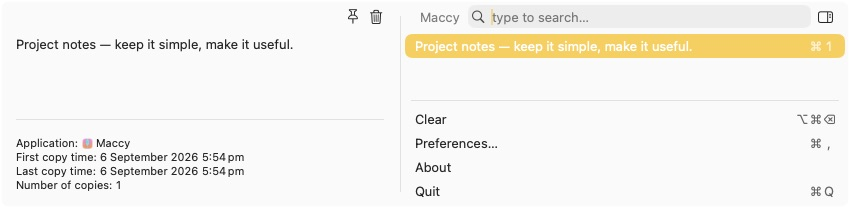
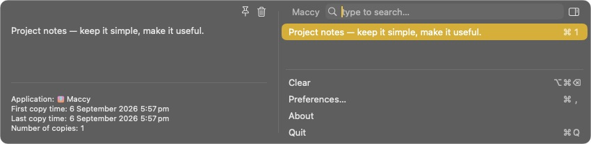
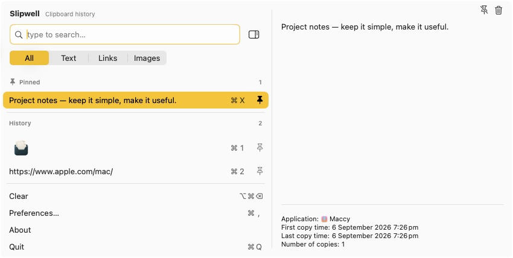
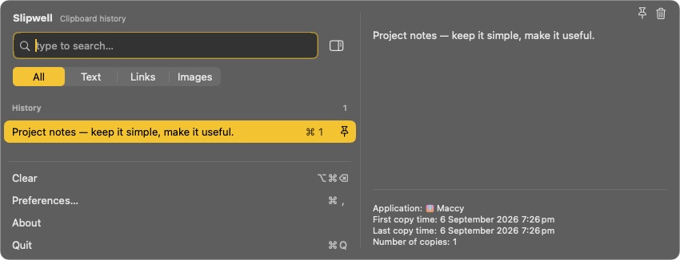
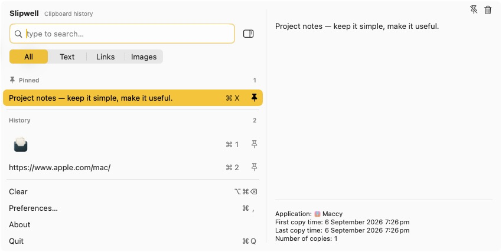
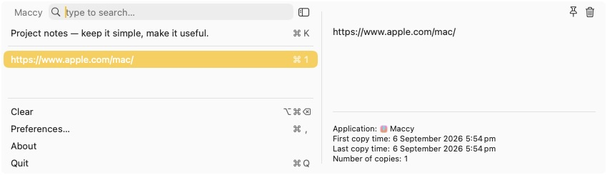
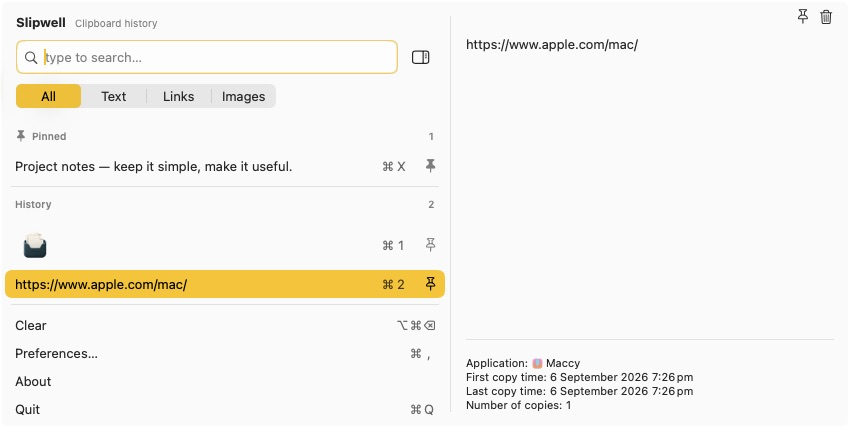
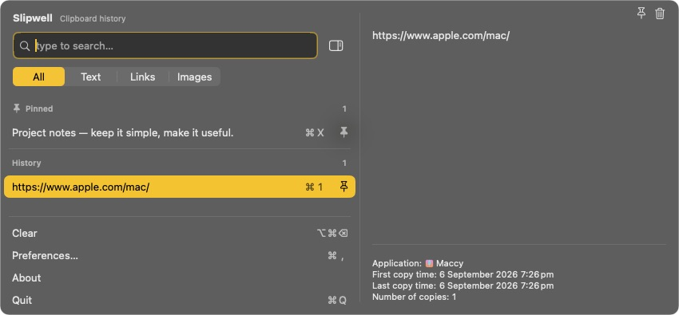
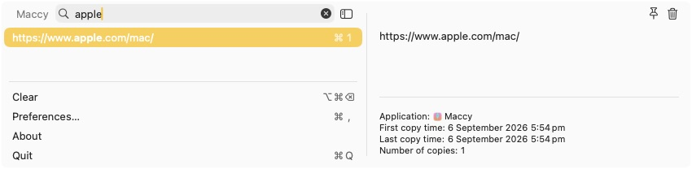
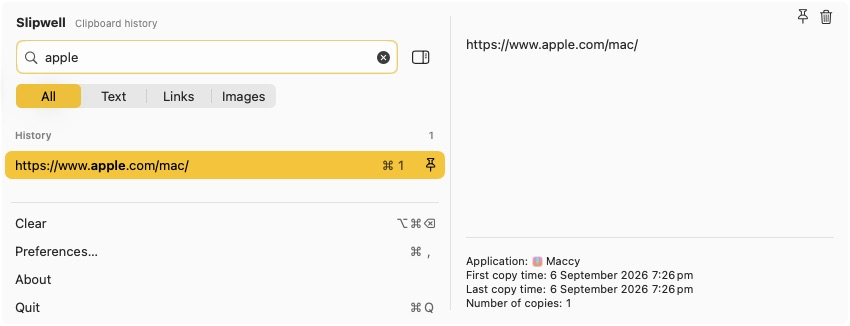
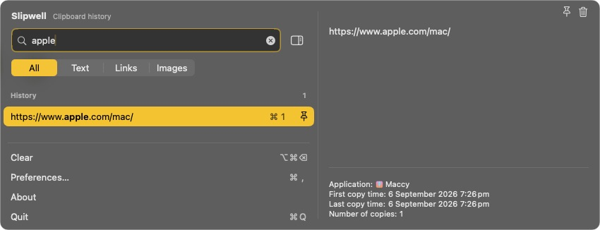
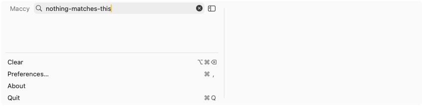
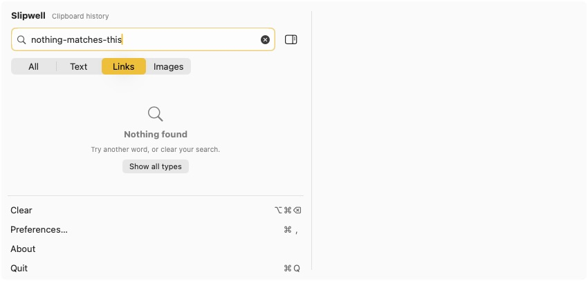
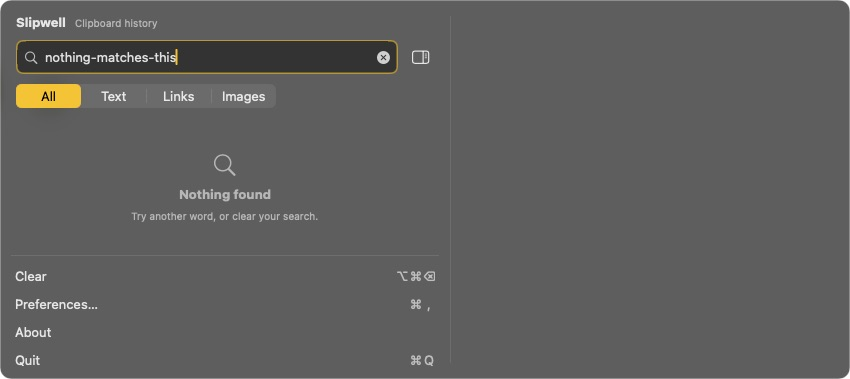
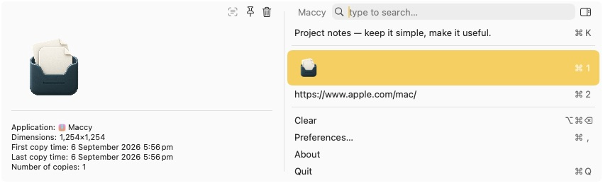
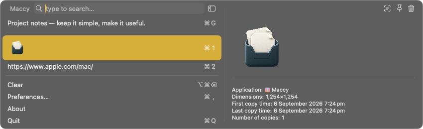
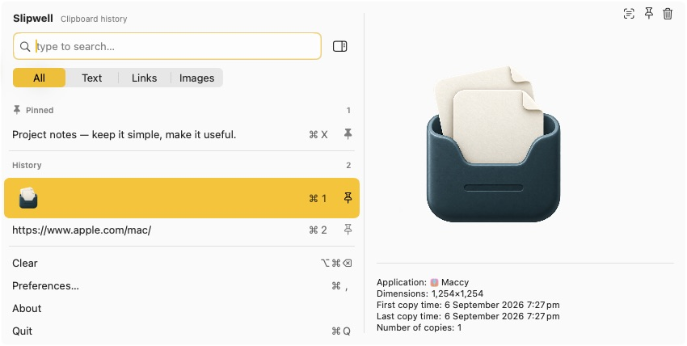
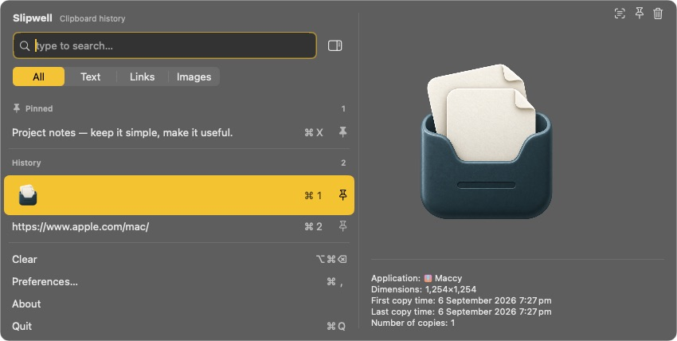
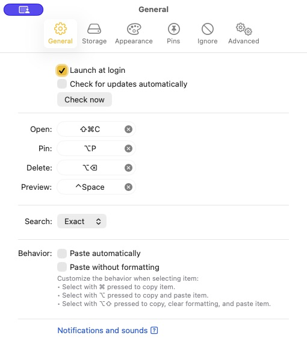
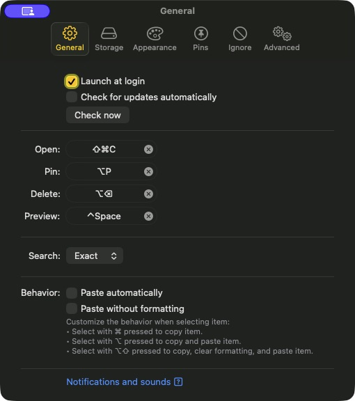
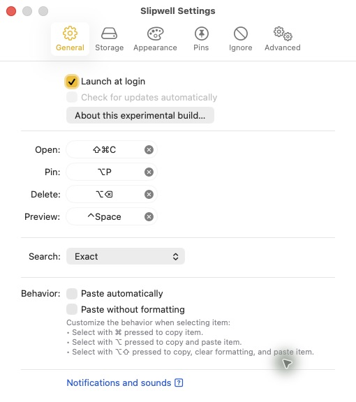
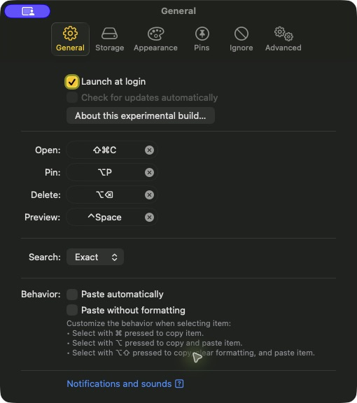
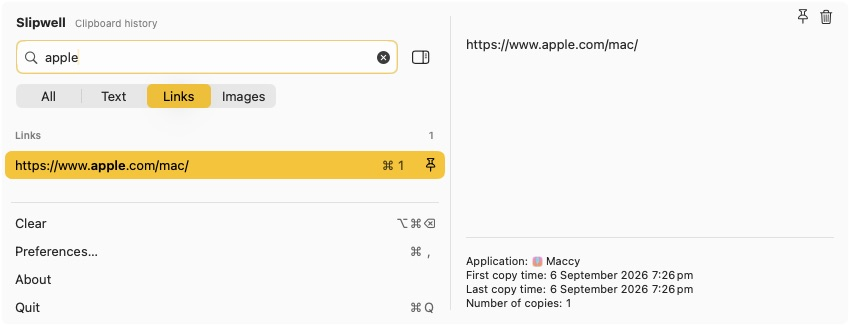
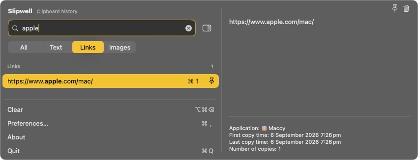
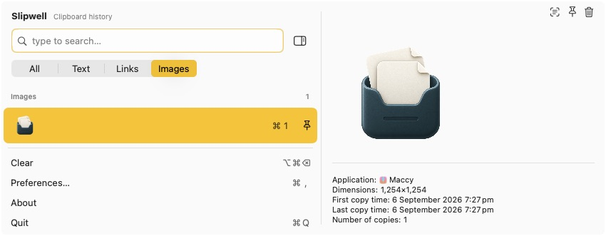
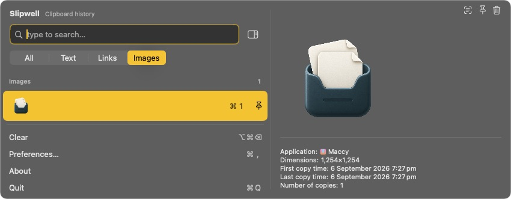
Derived from Maccy by Alex Rodionov and contributors. Independent experimental fork, MIT licensed.